Тренажёр готовит к ОГЭ (9 класс) и ЕГЭ (11 класс) по четырём предметам: математика, физика, информатика, русский язык. 313 задач в формате экзаменов, подсказки, разборы, мини-экзамены, повторение ошибок и ИИ-репетитор, который задаёт наводящие вопросы, а не решает за ученика.
Без установки и регистрации: обычные HTML-страницы, работают в браузере на компьютере и на телефоне, в том числе без интернета. Прогресс хранится в браузере ученика.
| ОГЭ, 9 класс | ЕГЭ, 11 класс | |
|---|---|---|
| Математика | 40 задач, 7 тем | 39 задач, 7 тем, профиль |
| Физика | 31 задача, 6 тем | 40 задач, 7 тем |
| Информатика | 40 задач, 7 тем | 41 задача, 8 тем |
| Русский язык | 40 задач, 7 тем | 42 задачи, 8 тем |
Формат экзаменов — по спецификациям ФИПИ на 2027 год:
| Экзамен | Предмет | Заданий | Время | Максимум баллов |
|---|---|---|---|---|
| ОГЭ | Математика | 25 | 235 мин | 31 |
| ОГЭ | Физика | 22 | 180 мин | 39 |
| ОГЭ | Информатика | 16 | 150 мин | 21 |
| ОГЭ | Русский язык | 13 | 235 мин | 38 |
| ЕГЭ | Математика, профиль | 20 | 235 мин | 33 |
| ЕГЭ | Физика | 26 | 235 мин | 45 |
| ЕГЭ | Информатика | 27 | 235 мин | 29 |
| ЕГЭ | Русский язык | 27 | 210 мин | 50 |
Документы ФИПИ на 2027 год пока опубликованы как проекты. Перед экзаменом сверьтесь с актуальной демоверсией на fipi.ru.
Решение открывается только после попытки. После ошибки появляется первая подсказка, всего их три: идея, план, почти решение.
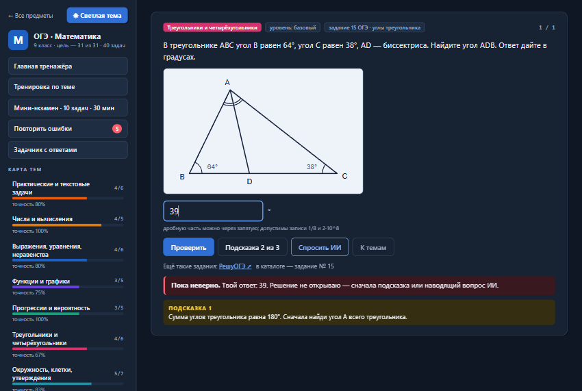
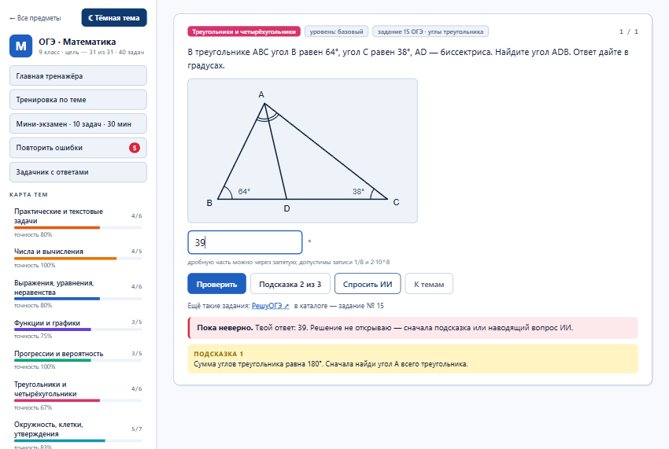
Кнопка собирает готовый запрос с условием задачи и ответом ученика. Кнопки в окне сами копируют его и открывают Claude, Gemini или DeepSeek — остаётся вставить запрос. В запросе прямо сказано: не называть ответ, задать один наводящий вопрос и проверить запись по критериям экзамена.
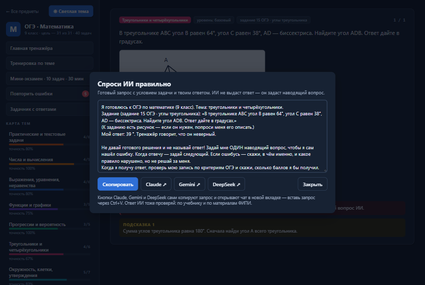
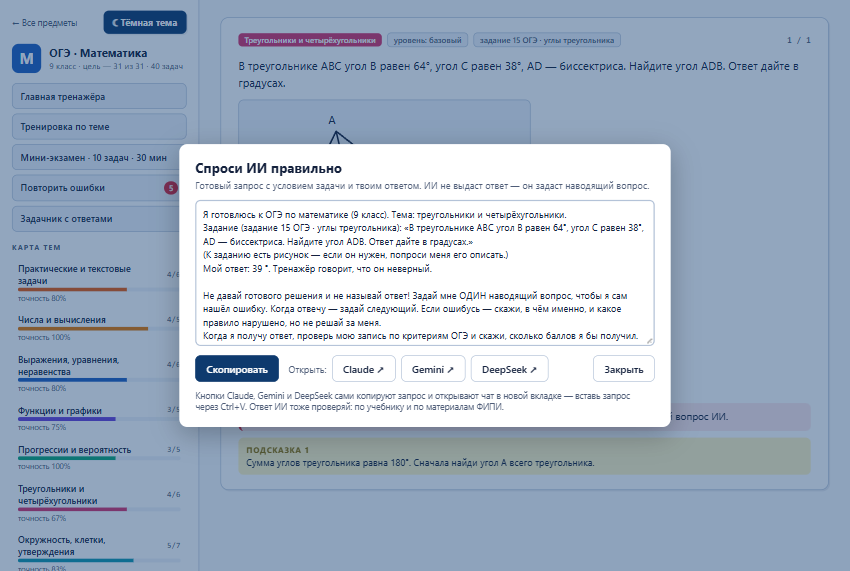
После верного ответа на задачу с развёрнутым решением ученик видит полный разбор и ставит себе баллы по критериям эксперта.
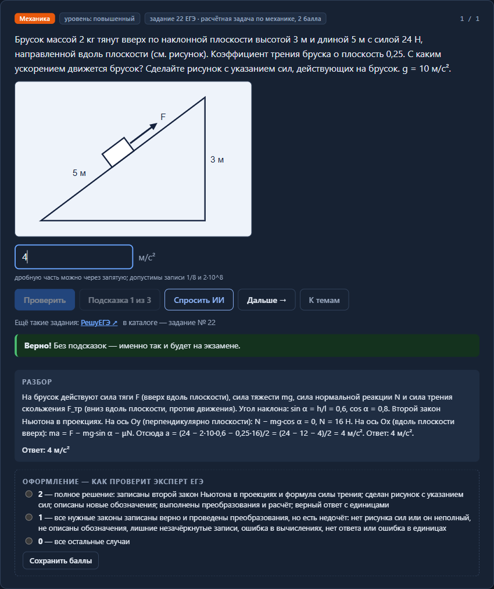
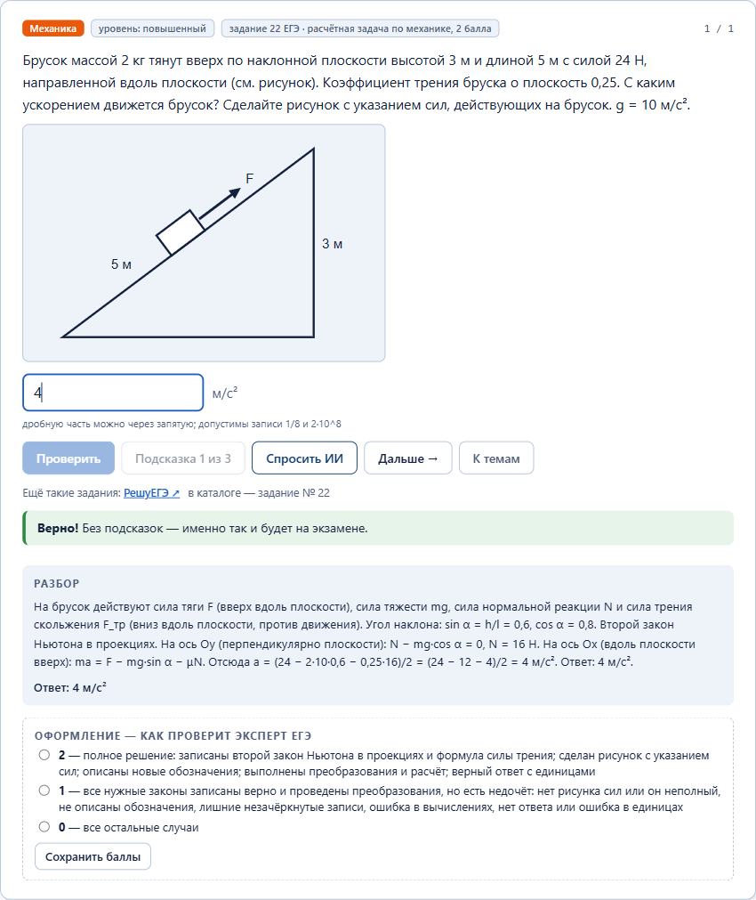
Мини-экзамен идёт на время и без подсказок, в нём по задаче из каждой темы. Итог показан по темам. Каждая ошибка попадает в «Повторить ошибки» и возвращается через 1, 3, 7 и 14 дней, пока не перестанет повторяться.
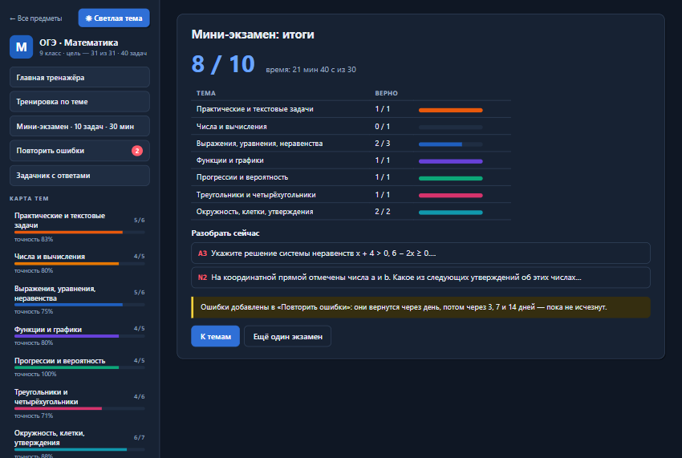
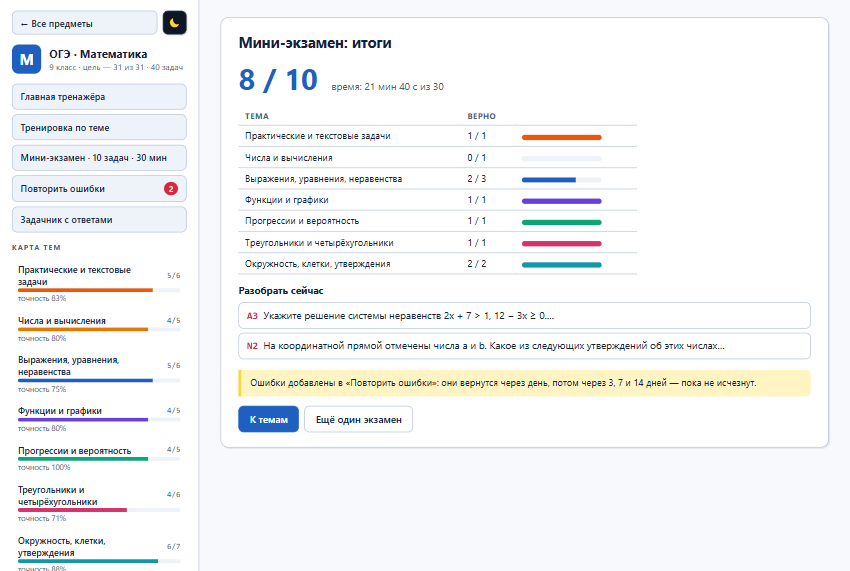
В задачах по информатике программы и данные показаны с отступами. Ответ может состоять из нескольких чисел. В русском языке есть тексты с пронумерованными предложениями и позициями знаков, изложение и сочинение с образцом и критериями.
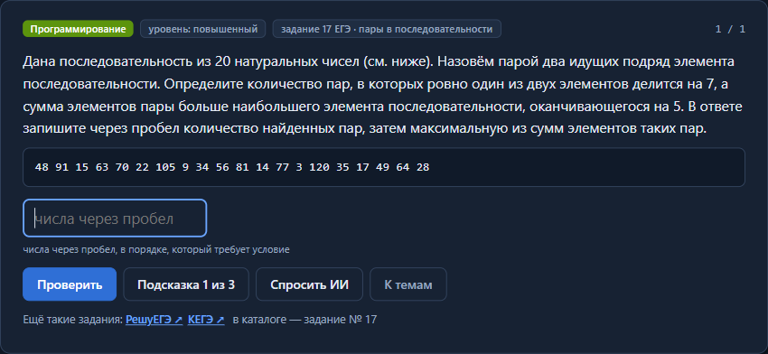
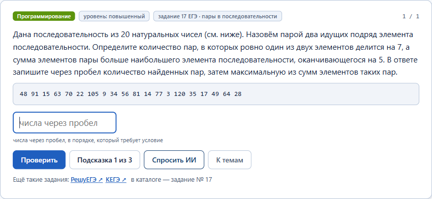
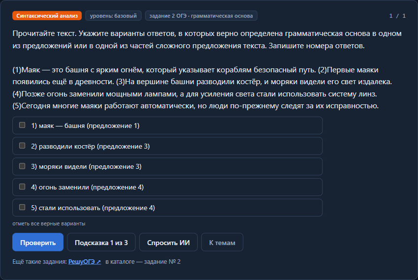
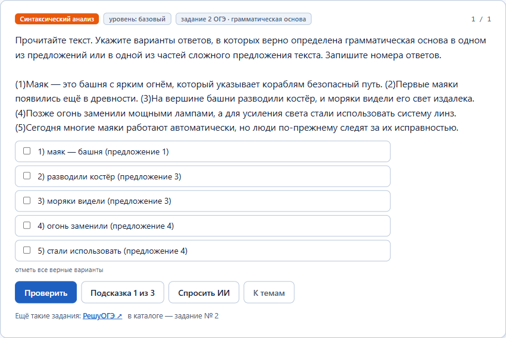
Все задачи предмета на одной странице, ответы и решения спрятаны под спойлером. Страницу можно распечатать.
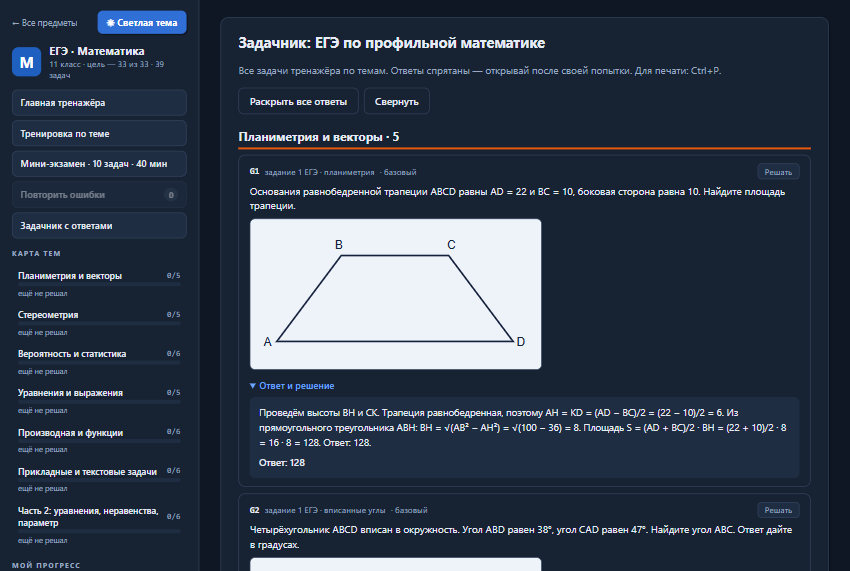
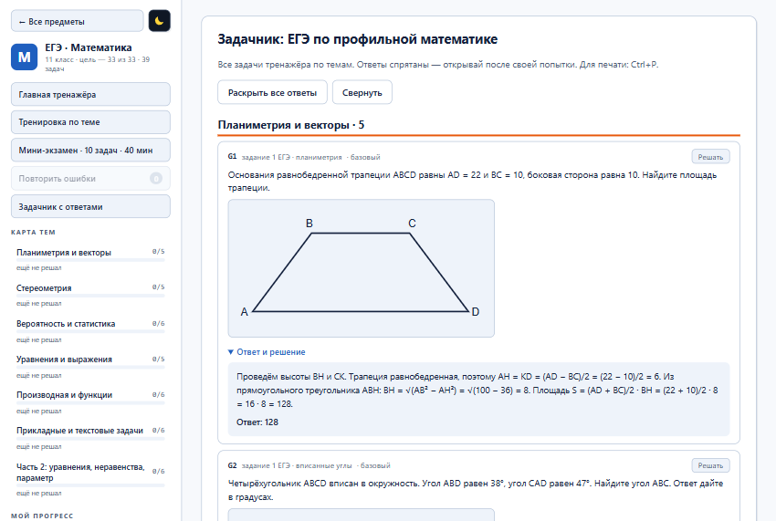
Когда задачи тренажёра решены без ошибок, новые задания берутся из каталогов РешуОГЭ и РешуЕГЭ: там задания открытого банка ФИПИ по номерам КИМ, с ответами и решениями. По информатике ЕГЭ — ещё КЕГЭ: задания и варианты в компьютерном формате. Под каждой задачей тренажёра есть ссылка на нужный каталог и номер задания.
| ОГЭ, 9 класс | ЕГЭ, 11 класс | |
|---|---|---|
| Математика | РешуОГЭ ↗ | РешуЕГЭ ↗ |
| Физика | РешуОГЭ ↗ | РешуЕГЭ ↗ |
| Информатика | РешуОГЭ ↗ | РешуЕГЭ ↗ · КЕГЭ ↗ |
| Русский язык | РешуОГЭ ↗ | РешуЕГЭ ↗ |
По умолчанию тренажёр тёмный. Квадратная кнопка с солнцем или луной в шапке главной, в меню тренажёра и вверху этих страниц переключает оформление. Выбор запоминается в браузере, и примеры на этой странице показываются в той же теме. Так выглядит другая тема:
Методика объясняет, как готовиться с ИИ на максимум баллов. Там же готовые запросы для каждого шага и советы по каждому предмету.
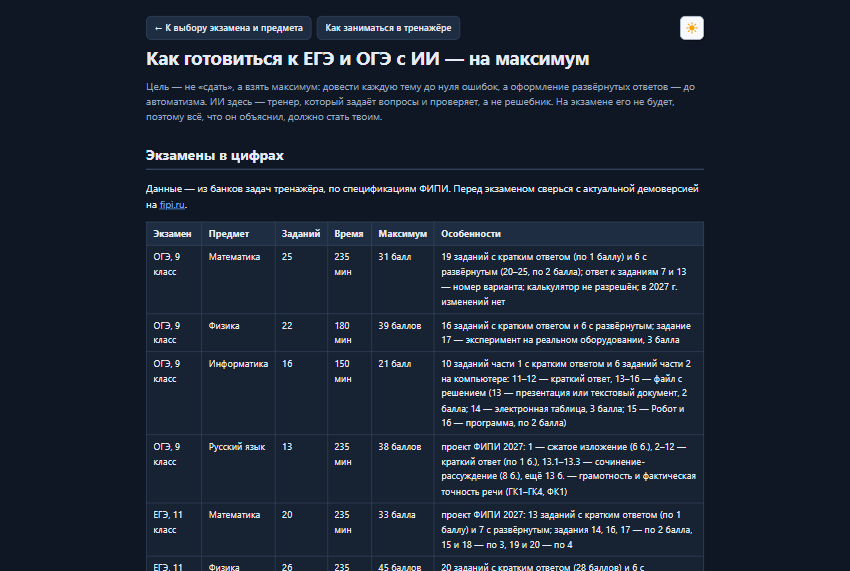
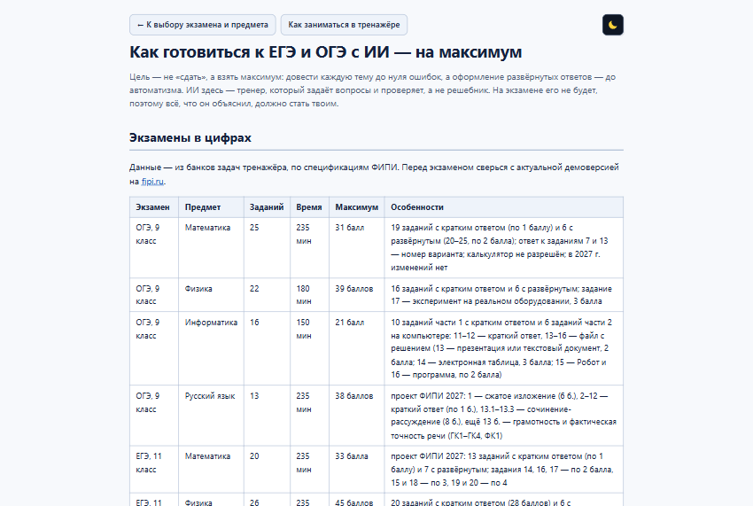
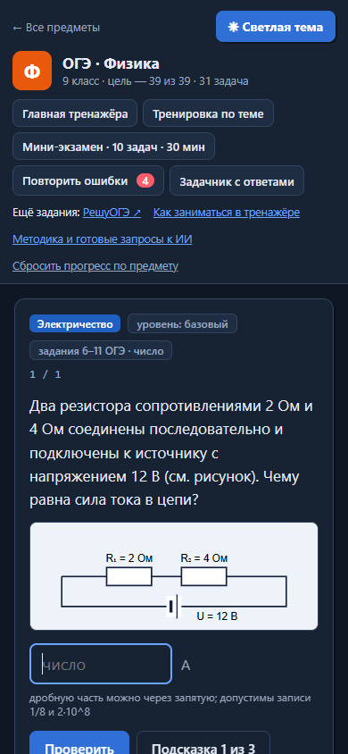
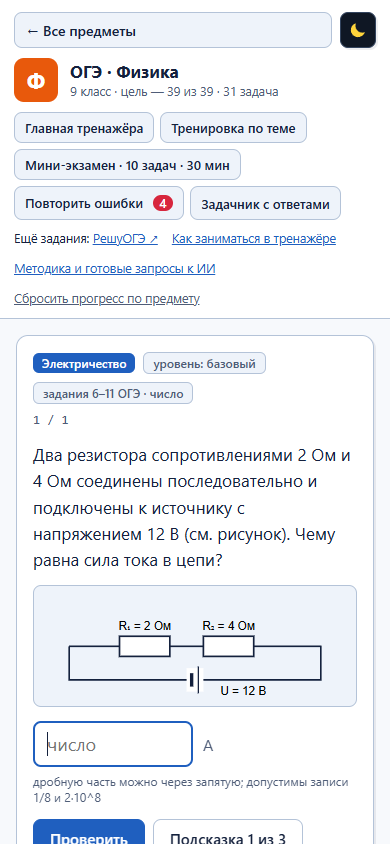
index.html двойным щелчком.
Или склонируйте репозиторий:git clone https://github.com/alex-invntr/EGE_OGE_Test_Trainer.git
Работает в Chrome, Edge, Firefox и Яндекс Браузере. Все пути относительные, поэтому одна и та же папка работает и с диска, и на GitHub Pages.
Задачи оригинальные, в стиле экзаменов: найденные совпадения с открытыми источниками заменены. Ни один ответ не взят «на веру».
| Банк | Задач | Ответ пересчитан кодом | Слепое решение совпало | Свободный ответ: образец и критерии |
|---|---|---|---|---|
| ОГЭ · математика | 40 | 39 | — | 1 |
| ОГЭ · физика | 31 | 30 | — | 1 |
| ОГЭ · информатика | 40 | 40 | — | 0 |
| ОГЭ · русский язык | 40 | 17 | 37 из 37 | 3 |
| ЕГЭ · математика | 39 | 38 | — | 1 |
| ЕГЭ · физика | 40 | 39 | — | 1 |
| ЕГЭ · информатика | 41 | 41 | — | 0 |
| ЕГЭ · русский язык | 42 | 31 | 40 из 40 | 2 |
Прогон в браузере: 8 банков, 313 задач, 774 проверки — все пройдены. Скрипты проверки и устройство проекта описаны в README на GitHub.
Проект вырос из тренажёра ОГЭ по физике для лекции «Технологии: вчера, сегодня, завтра» в 9 инженерном классе.
Код — MIT, задачи и тексты — CC BY 4.0. © 2026 alex-invntr.
Исходный код — на GitHub.